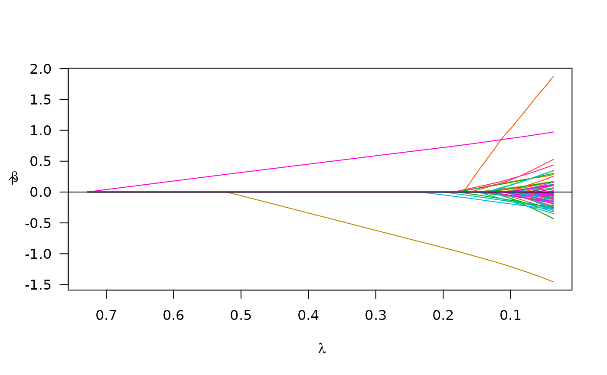

If your data is in a matrix or data frame
Source:vignettes/articles/matrix_data.Rmd
matrix_data.RmdIn this overview, I will provide a demo of the main functions in
plmmr using the admix data. Checkout the other
vignettes to see examples of analyzing data from PLINK files or
delimited files.
Examine what we have in the admix data:
str(admix)
#> List of 3
#> $ X : int [1:197, 1:100] 0 0 0 0 1 0 1 0 0 0 ...
#> ..- attr(*, "dimnames")=List of 2
#> .. ..$ : NULL
#> .. ..$ : chr [1:100] "Snp1" "Snp2" "Snp3" "Snp4" ...
#> $ y : num [1:197, 1] 3.52 3.754 1.191 0.579 4.085 ...
#> $ ancestry: num [1:197] 1 1 1 1 1 1 1 1 1 1 ...Basic model fitting
The admix dataset is now ready to analyze with a call to
plmmr::plmm() (one of the main functions in
plmmr):
admix_fit <- plmm(admix$X, admix$y)
summary(admix_fit, lambda = admix_fit$lambda[50])
#> lasso-penalized regression model with n=197, p=101 at lambda=0.01426
#> -------------------------------------------------
#> The model converged
#> -------------------------------------------------
#> # of non-zero coefficients: 88
#> -------------------------------------------------Notice: I am passing admix$X as the design
argument in plmm(); internally, plmm() has
taken this X input and created a plmm_design
object. You could also supply X and y to
create_design() to make this step explicit.
The returned beta_vals item is a matrix whose rows are
\hat\beta coefficients and whose
columns represent values of the penalization parameter \lambda. By default, plmm fits
100 values of \lambda (see the
setup_lambda function for details).
admix_fit$beta_vals[1:10, 97:100] |>
knitr::kable(digits = 3,
format = "html")| 0.00054 | 0.00050 | 0.00047 | 0.00044 | |
|---|---|---|---|---|
| (Intercept) | 7.037 | 7.038 | 7.038 | 7.039 |
| Snp1 | -0.937 | -0.937 | -0.937 | -0.937 |
| Snp2 | 0.217 | 0.218 | 0.218 | 0.218 |
| Snp3 | 2.991 | 2.991 | 2.992 | 2.992 |
| Snp4 | 0.193 | 0.193 | 0.193 | 0.193 |
| Snp5 | 0.883 | 0.884 | 0.884 | 0.885 |
| Snp6 | -0.085 | -0.085 | -0.085 | -0.085 |
| Snp7 | 0.092 | 0.092 | 0.092 | 0.092 |
| Snp8 | 0.000 | 0.000 | 0.000 | 0.000 |
| Snp9 | 0.192 | 0.192 | 0.192 | 0.192 |
Note that for all values of \lambda, SNP 8 has \hat \beta = 0. This is because SNP 8 is a constant feature, a feature (i.e., a column of \mathbf{X}) whose values do not vary among the members of this population.
We can summarize our fit at the nth \lambda value:
# for n = 25
summary(admix_fit, lambda = admix_fit$lambda[25])
#> lasso-penalized regression model with n=197, p=101 at lambda=0.08163
#> -------------------------------------------------
#> The model converged
#> -------------------------------------------------
#> # of non-zero coefficients: 46
#> -------------------------------------------------We can also plot the path of the fit to see how model coefficients vary with \lambda:
plot(admix_fit)
Plot of path for model fit
Suppose we also know the ancestry groups with which for each person
in the admix data self-identified. We would probably want
to include this in the model as an unpenalized covariate (i.e., we would
want ‘ancestry’ to always be in the model). To specify an unpenalized
covariate, we need to use the create_design() function
prior to calling plmm(). Here is how that would look:
# add ancestry to design matrix
X_plus_ancestry <- cbind(admix$ancestry, admix$X)
# adjust column names -- need these for designating 'unpen' argument
colnames(X_plus_ancestry) <- c("ancestry", colnames(admix$X))
# create a design
admix_design2 <- create_design(X = X_plus_ancestry,
y = admix$y,
# below, I mark ancestry variable as unpenalized
# we want ancestry to always be in the model
unpen = "ancestry")
# now fit a model
admix_fit2 <- plmm(design = admix_design2)We may compare the results from the model which includes ‘ancestry’ to our first model:
summary(admix_fit2, idx = 25)
#> lasso-penalized regression model with n=197, p=102 at lambda=0.09886
#> -------------------------------------------------
#> The model converged
#> -------------------------------------------------
#> # of non-zero coefficients: 14
#> -------------------------------------------------
plot(admix_fit2)
Cross validation
To select a \lambda value, we often
use cross validation. Below is an example of using cv_plmm
to select a \lambda that minimizes
cross-validation error:
admix_cv <- cv_plmm(design = admix_design2, return_fit = T)
admix_cv_s <- summary(admix_cv, lambda = "min")
print(admix_cv_s)
#> lasso-penalized model with n=197 and p=102
#> At minimum cross-validation error (lambda=0.1853):
#> -------------------------------------------------
#> Nonzero coefficients: 3
#> Cross-validation error (deviance): 1.33
#> Scale estimate (sigma): 1.154We can also plot the cross-validation error (CVE) versus \lambda (on the log scale):
plot(admix_cv)Plot of CVE
Parallelization
As an option for cross-validation, with data stored in-memory you may
choose to implement CV in parallel using the cluster
argument in cv_plmm(). Here is an example of setting up CV
in parallel:
# make a cluster
num_cores <- 5 # just using 5 cores as a laptop-sized example
cl <- parallel::makeCluster(spec = num_cores)
print(cl) # check to see what kind of cluster you've made
#> socket cluster with 5 nodes on host 'localhost'
cv_fit_parallel <- cv_plmm(design = admix_design2,
type = "blup",
cluster = cl,
return_fit = T,
trace = FALSE)
# note: the results closely correspond to the above
summary(cv_fit_parallel)
#> lasso-penalized model with n=197 and p=102
#> At minimum cross-validation error (lambda=0.1853):
#> -------------------------------------------------
#> Nonzero coefficients: 3
#> Cross-validation error (deviance): 1.30
#> Scale estimate (sigma): 1.138
plot(cv_fit_parallel)
Prediction
Below is an example of the predict() methods for
PLMMs:
# make predictions for select lambda value(s)
y_hat <- predict(object = admix_fit,
newX = admix$X,
type = "blup",
X = admix$X)We can compare these predictions with the predictions we would get from an intercept-only model using mean squared prediction error (MSPE) – lower is better:
# intercept-only (or 'null') model
crossprod(admix$y - mean(admix$y))/length(admix$y)
#> [,1]
#> [1,] 5.928528
# our model at its best value of lambda
apply(y_hat, 2, function(c){crossprod(admix$y - c)/length(c)}) -> mse
min(mse)
#> [1] 0.6930826
# ^ across all values of lambda, our model has MSPE lower than the null modelWe see our model has better predictions than the null.